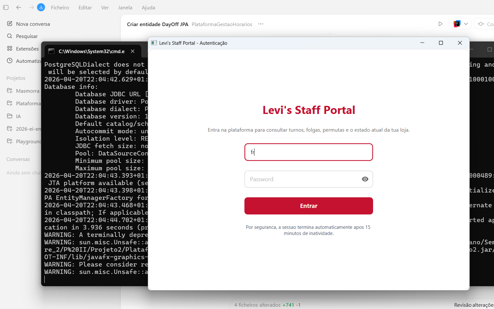
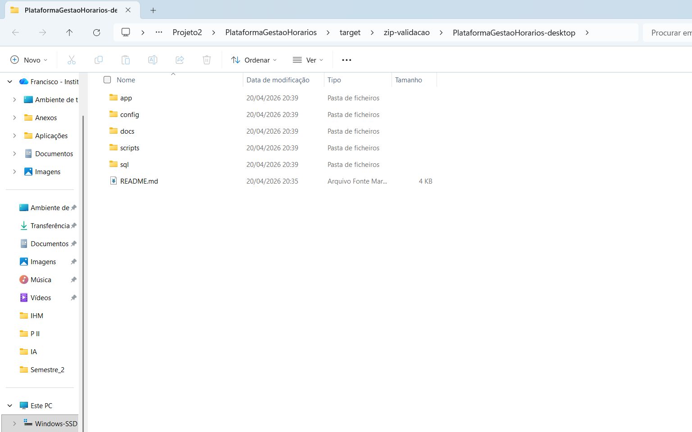

1. Enquadramento
A Plataforma de Gestao de Horarios foi desenvolvida para apoiar a organizacao do trabalho por turnos numa loja Levi's, com foco na distribuicao operacional do trabalho, na comunicacao entre colaboradores e gerencia e na reducao do esforco manual associado ao planeamento e validacao mensal dos horarios.
Nesta fase do projeto, o resultado entregue corresponde a uma aplicacao desktop funcional, suportada por JavaFX para a interface grafica, Spring Boot para a estrutura aplicacional e PostgreSQL para persistencia dos dados.
2. Objetivos da solucao
Objetivos operacionais
- autenticacao e separacao de perfis
- consulta de turnos e contexto diario
- gestao de folgas, permutas e preferencias
- fluxos de aprovacao pela gerencia
Objetivos tecnicos
- arquitetura por camadas
- integracao Spring Boot + JavaFX
- persistencia com JPA
- demonstracao estavel com dados de exemplo
3. Tecnologias e arquitetura
A aplicacao foi estruturada segundo uma organizacao por camadas, permitindo separar interface, controlo de fluxo, regras de negocio e acesso a dados.
Frontend desktop
Interface em JavaFX com ecras FXML para login, dashboard, perfil, preferências, folgas, permutas, gestao da loja, gestao de funcionarios, geracao de horarios, painel da gerencia e relatorios.
Backend aplicacional
Spring Boot com BLL dedicada para cada modulo, repositorios JPA, seguranca de passwords com BCrypt, controlo de sessao e auditoria de eventos relevantes.
4. Modelo de dados principal
O dominio persistido cobre os elementos nucleares da operacao da loja.
| Entidade | Papel principal |
|---|---|
| Utilizador / Cargo / Lojautilizador | Representam pessoas, papeis e ligacao ativa a uma loja. |
| Loja / Regra / RegrasLoja | Definem o contexto operacional e os parametros configuraveis por loja. |
| Turno / Horario / HistoricoHorarioEstado | Modelam turnos, atribuicoes e historico dos estados dos horarios. |
| DayOff | Guarda pedidos de folga e respetivos estados. |
| Permuta | Representa pedidos de troca de turno e respetiva decisao. |
| Preferencia | Regista preferencias de folgas, ferias, colegas e turnos. |
| PropostaHorarioMensal | Suporta a geracao e validacao de propostas mensais. |
| EventoAuditoria | Regista eventos de seguranca, autenticacao e sessao. |
5. Funcionalidades implementadas
5.1 Autenticacao e sessao
- login por email e password
- validacao de contas ativas
- hashing com BCrypt
- migracao transparente de passwords antigas
- timeout de sessao por inatividade
- auditoria de login, logout e expiracao
5.2 Dashboard e colaborador
- proximos turnos
- equipa do dia
- navegacao lateral por modulos
- perfil com edicao de dados e password
5.3 Gestao operacional
- gestao da loja e regras operacionais
- gestao de funcionarios
- pedidos de folga e historico
- permutas com aprovacao
- preferencias do funcionario com aprovacao
- painel unificado do gerente para pedidos pendentes
5.4 Planeamento e controlo
- geracao de propostas mensais de horarios
- validacao de propostas pelo supervisor
- relatorios mensais de horas e exportacao CSV
5.5 Entrega desktop
- script SQL de demonstracao
- roteiro de demo e checklist de validacao
- ZIP de entrega com JAR, config, scripts e SQL
6. Mapeamento de requisitos
| Requisito | Estado | Observacao |
|---|---|---|
| RFU01 - Definir horario da loja | Implementado | Gestao de abertura, fecho e regras da loja. |
| RFU02 - Horarios especiais por data | Trabalho futuro | Planeado em backlog proprio. |
| RFU03 / RFU04 / RFU05 | Implementado | Gestao de funcionarios com criacao, edicao e alteracao de estado. |
| RFU06 - Aprovar permutas | Implementado | Permutas com fluxo de decisao por gerencia. |
| RFU07 - Aprovar preferencias | Implementado | Area de aprovacao e decisao centralizada. |
| RFU08 / RFU09 | Implementado | Regras da loja e lancamento do horario. |
| RFU10 / RFU12 / RFU13 | Implementado | Preferencias de colegas, folgas e ferias. |
| RFU14 - Pedir troca de turno | Implementado | Fluxo de permutas com validacao. |
| RFU15 - Validar proposta de horario | Implementado | Supervisor valida proposta mensal. |
7. Dados de demonstracao e validacao
O projeto inclui um script de demonstracao que repoe dados estaveis e deixa o ambiente pronto para apresentacao, com lojas, cargos, utilizadores, horarios, folgas, preferencias, permutas e estrutura de propostas mensais.
Contas demo recomendadas
- francisco@levis.com
- francisco.gomes@levis.com
- henrique.siano@levis.com
Password comum: 123456
Validacoes realizadas
- login com perfis distintos
- fluxos de colaborador e de gestao
- relatorios mensais
- geracao de horarios
- ZIP extraido e arrancado fora do IntelliJ
8. Evidencias visuais
Captura do ecrã de autenticacao
Vista inicial da aplicacao desktop, utilizada para autenticar colaboradores e perfis de gestao.

Estrutura do pacote ZIP de entrega
Vista da pasta extraida com os artefactos entregues: JAR, configuracao, scripts, SQL e documentacao.

9. Estrutura da entrega desktop
A entrega passa a incluir nao apenas o codigo-fonte, mas tambem um pacote ZIP preparado para execução local com o JAR da aplicacao, configuracao externa, scripts de arranque, SQL e documentacao de apoio.
10. Trabalho futuro
- gestao de horarios especiais e excecoes por data
- testes automatizados dos fluxos criticos
- painel de auditoria com historico navegavel
- evolucao para API e interface web
11. Conclusao
O estado atual do projeto demonstra uma aplicacao desktop consistente, funcional e coerente com os objetivos propostos para a fase de entrega. A solucao cobre autenticacao, operacao do colaborador, decisao por parte da gerencia, geracao de horarios, relatorios e preparacao da demonstracao.
Esta versao estabelece uma base solida para a apresentacao da entrega desktop e para futuras evolucoes do projeto.